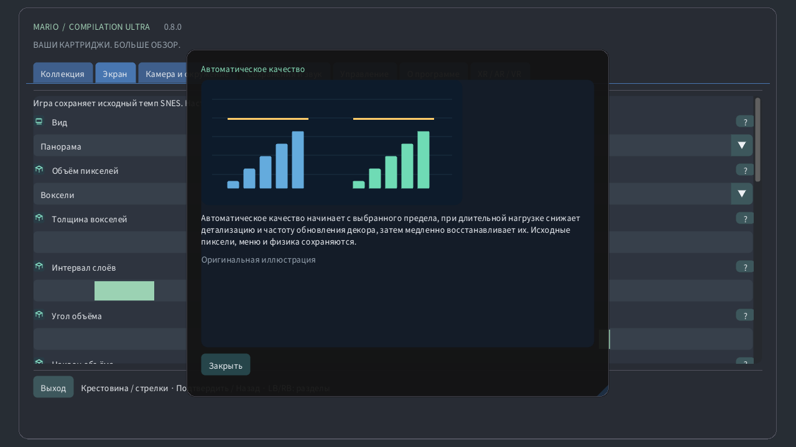

Выберите локальный картридж, запустите игру или откройте руководство. Публичные загрузки не содержат игр и ваших сохранений.
Оригинал сохраняет экран консоли, панорама расширяет его. Атлас охватывает доступный рельеф; полная карта при поддерживаемом формате читает всю загруженную область, включая неизученную. Дверь может загрузить другую область.
Вид может следовать за исходной камерой, персонажем или оставаться неподвижным. Меняется только обзор: персонаж не перемещается, далёкие враги не активируются.
Масштаб определяет видимую область. На часах 0% показывает всю загруженную карту, а 100% — исходную камеру. Скорость игры не меняется.
На круглых часах линза преобразует весь прямоугольник игры в круг, сохраняя края изображения. Кнопки и текст не искажаются. Отключите её для обычного прямоугольника.
Обнаруженная коронка или вращающийся безель управляет масштабом в игре и прокруткой меню. Чувствительность меняет шаг вращения, инверсия — направление. Сенсорный масштаб работает и без коронки.
Ближайшие пиксели сохраняют жёсткие края. Чёткий фильтр улучшает нецелый масштаб, мягкий сглаживает увеличение. Исходное изображение и столкновения не меняются.
Квадратные пиксели сохраняют исходную форму пикселей; ТВ 4:3 воспроизводит пропорции телевизора. Пиксельный мир использует квадратные пиксели и целочисленный масштаб.
Автоматическое качество начинает с выбранного предела, при длительной нагрузке снижает детализацию и частоту обновления декора, затем медленно восстанавливает их. Исходные пиксели, меню и физика сохраняются.
Резерв оставляет время на непредвиденную работу. Больший резерв улучшает плавность. Режим повышенной плавности использует 40%, Quest — не менее 35%. При устойчивом запасе качество восстанавливается.
Локальное тепловое состояние Android позволяет снизить декоративные детали при нагреве. Дополнительные разрешения и сеть не нужны. Реальные частоты и обновление экрана по-прежнему определяет система.
Вертикальная синхронизация следует за экраном и уменьшает разрывы. Игра сохраняет исходный такт. Quest использует выбранную частоту гарнитуры; резерв рассчитывается относительно неё.
Эффективный ЭЛТ сохраняет ретростиль с меньшим объёмом вычислений. Автоматический режим разрешает эталонный вариант только после устойчивого измеренного запаса GPU. Эталонный принудительно использует более тяжёлый расчёт.
Выберите окно, дисплей и полноэкранный режим. Эти параметры меняют место показа, не затрагивая загруженный уровень и сохранения.
Фон заполняет пространство вокруг игры. Мягкий пейзаж использует её цвета; полночь и чёрный выглядят спокойнее. Размытие и яркость действуют на это окружение.
Размытие смягчает окружающий пейзаж, яркость меняет его свет. Исходное изображение игры остаётся прежним. При нагрузке автоматический режим может реже обновлять этот декор.
Мягкие края соединяют расширенный пейзаж с фоном возле исходной камеры. Отключение делает границу резкой. Полная карта сохраняет собственное кадрирование.
Метка указывает персонажа, рамка — исходную камеру, миникарта — её положение в области. Крупный план сохраняет читаемость исходного экрана при отдалении карты.
Предпросмотр показывает проверенные позиции или облик, наблюдавшийся локально. Бледные объекты и контуры — подсказки, а не дополнительные активные враги. Видимость меняют прозрачность и подписи.
Выберите угол, размер, прозрачность и время подсказок. Нулевое время оставляет подсказку на экране. Эти элементы не меняют игру или камеру.
Настройте язык, размер и контраст меню для удобного чтения. Иллюстрированные руководства доступны без сети. Отрисовка игры и язык картриджа от этого не зависят.
Выберите раскладку кнопок и мёртвые зоны стиков. Большая зона игнорирует мелкие движения. Быстрое управление добавляет команды камеры, сохраняя обычные игровые действия.
Сенсорные кнопки поддерживают несколько пальцев одновременно. Автоматический режим показывает их без подключённого геймпада. Положение, размер, прозрачность и сторона меняют управление, но не физику.
Удерживайте выбранную кнопку для перемотки по точным недавним состояниям. Длительность зависит от памяти и игры. Обратный звук и индикатор необязательны; сохранения на диске отделены.
Слот хранит текущее состояние машины. Загрузка возвращает его; автовозобновление использует отдельный слот. Прогресс картриджа хранится отдельно. Для замены требуется подтверждение.
Громкость и отключение звука управляют локальным воспроизведением. Они не меняют скорость и не удаляют сохранения. Звук перемотки настраивается отдельно.
Пауза освобождает удерживаемые кнопки. Фокус и отслеживание определяют автоматические паузы. Возобновление продолжает игру, выход записывает прогресс картриджа.
Выберите плавающий экран, стену, напольный атлас, аркадный стол, комнату ЭЛТ или изогнутый экран. Та же игра продолжается; меняется только её расположение в пространстве.
Размер, расстояние, высота, наклон и отступ размещают виртуальный объект в комнате. Используйте показанные единицы. Центрирование возвращает его в доступную зону без перезапуска игры.
Автоматическая стена использует разрешённые данные комнаты, если они доступны. Фиксация и сохранение удерживают выбранное место. Потеря отслеживания может ставить игру на паузу; ручное размещение остаётся доступным.
Виртуальный пульт, руки и прямое касание вызывают те же игровые действия. Размер и подсказки улучшают удобство. Сила вибрации меняет отклик, но не время нажатий.
ЭЛТ добавляет строки развёртки, RGB-маску, изогнутое стекло и отражения. Усиление меняет стиль, а не информацию игры. Автоматический режим может упрощать затратный декор.
Сквозной просмотр показывает настоящую комнату; при его отключении фон создаёт виртуальное окружение. Прозрачность, пейзаж и яркость меняют пространство вокруг игры.
Детализация полотна и глаз ограничивает разные слои. Автоматическое качество регулирует оба. Отдельный слой меню остаётся чётким; периферийная фовеация необязательна и зависит от поддержки.
Знак вопроса открывает иллюстрированное пояснение. Наведение мыши или фокус геймпада показывает краткий просмотр, касание — карточку. Иллюстрации созданы специально и не являются снимками игр.
Ручное качество отключает адаптацию и сохраняет выбранную детализацию. Автоматическое качество возвращает адаптацию; повышенная плавность оставляет больший запас времени.
На совместимых Quest длительная нагрузка может снизить детализацию по краям, сохраняя центр. Меню остаются на отдельном чётком слое. Без поддержки включается обычный рендеринг. Качество в физическом шлеме не проверено.
Необязательная процедурная 3D-визуализация: пиксели становятся столбиками, а ландшафт, фон и персонажи занимают разные слои глубины. Рельеф неглубокий, воксели толще. Толщина меняет глубину, угол меняет вид на экране. Автокачество снижает детализацию под нагрузкой. HUD и крупный план сохраняют исходные пиксели. Особые сцены используют исходный экран. Это интерпретация, а не восстановление скрытых сторон. Производительность на физических устройствах не проверена.